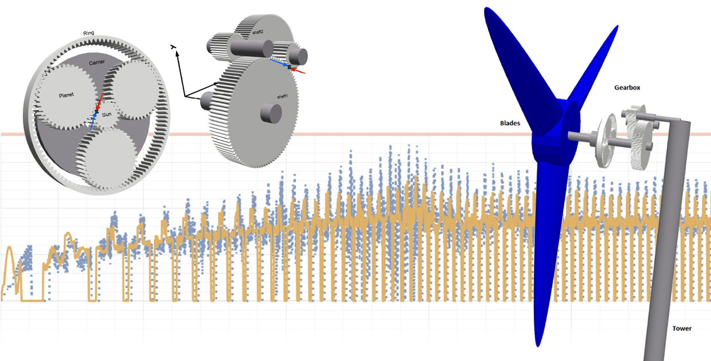

Wolfram Blog · 2024
Enhance Wind Turbine Design with the New Rotating Machinery Library
Gearbox failure prevention via contact-stress simulation across isolated and full system models, using ACCIONA AW-100/3000 as case study.
Read article →